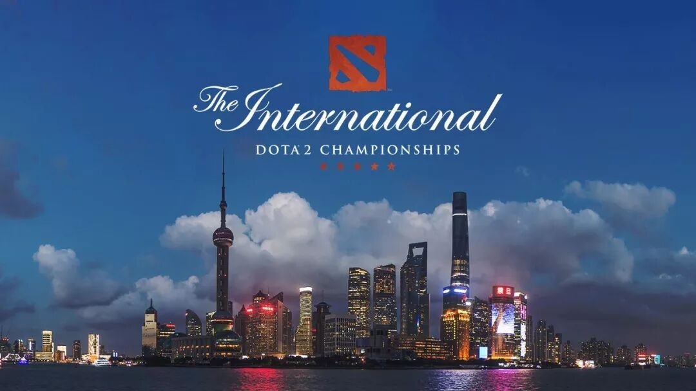
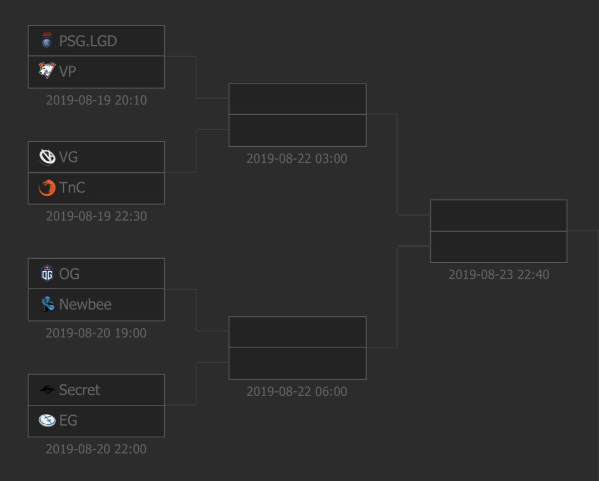
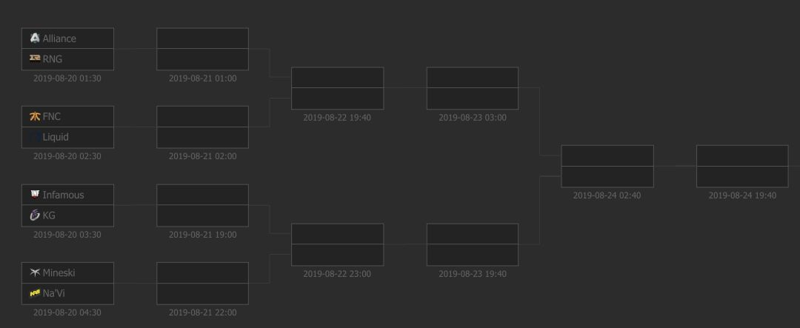

这次TI9（The International， 即Dota2国际邀请赛）在上海举办，真的很激动人心！不知道国内的小伙伴有没有抢到票的。
去现场看感受一下氛围还是很爽的，当然要是中国队拿冠军就更爽了。我去的那年没拿到，还是有些郁闷的。
本来以为比赛在上海办的话，在美国看就要半夜了。结果发现居然好多国内上午的比赛美国晚上正好可以看，感觉非常舒服。
为了看比赛，这周的文章就准备这样水一篇了。我来简单介绍一下TI的今年，顺便贴几个链接，方便大家看比赛。
今年一共有4支半的中国队进入最终的淘汰赛，分别是LGD，VG，KG，RNG和Newbee。前面两只队在小组赛的时候成绩比较好，进入了胜者组，后面两支实力相对弱一点，进入了败者组。
而Newbee则是之前压根没有进入TI的正赛，后来收购了北美区已经进入TI正赛的Forward Gaming，让Forward Gaming挂着他们的牌子打的TI正赛。
浏览比赛赛程
我找了半天，似乎这个地方的赛程安排是最全的。
https://www.esgo.com/dota2/tournaments/The_International_2019/65861

胜者组

败者组
看直播
似乎OB的直播一直是人气最高的，而OB这几个主播中yyf的直播间则似乎是老大。
反正直播间就是douyu的9999房间，链接在下面。
https://www.douyu.com/topic/TI9?rid=9999
录播
当然大家不一定有空看直播啦，录播的话B站上面会有蛮多的。比如yyf的b站账号，会放一些比赛的集锦。
https://space.bilibili.com/17646811
还有以ti9为关键词搜索，也能找到蛮多的。
最后还有斗鱼的录播，有非常完整的录像。
介绍结束，我去看比赛啦。